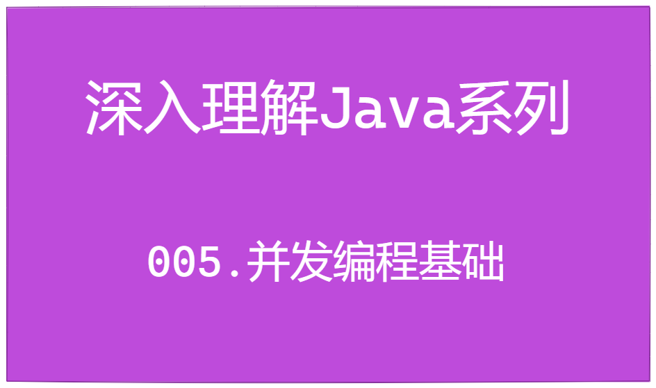

深入理解Java系列 | 并发编程基础
Hi 大家好，我是「 毛与帆 」，一个热爱技术的后端工程师，感谢你的关注！

在前面的两篇文章中深入理解Java系列 | BlockingQueue用法详解和深入理解Java系列 | LinkedBlockingQueue用法详解，主要介绍了阻塞队列的用法；而阻塞队列在Java中主要是用来进行多线程并发编程的场景，所以从本文开始将会从浅入深的介绍Java并发编程的相关知识。
首先，本文主要介绍并发编程的基础知识，现在开始吧。
什么是并发编程？
所谓并发编程，其实就是指在一台计算机上，可以同时执行多个任务，目的是尽可能提高程序的执行速度。
说到并发编程，不可避免的会谈到两个概念：进程和线程。
对于现代很多操作系统来说，都支持多任务处理，比如我们使用一台windows的计算机，可以同时使用浏览器、编程的IDE、聊天工具、邮件等多个程序，而每个程序对于操作系统来说其实就是进程。
所以进程就是一个正在执行的程序，一个进程是操作系统进行资源分配和管理的基本单位。
对于一个进程来说，也可以同时执行多个任务，比如我们使用浏览器时，可以一边浏览网页，一边进行文件的下载，这些子任务的执行，都是依赖线程实现的。线程是进程的组成部分，一个进程至少有一个线程组成，多个线程共享当前进程的资源。而线程也是操作系统进行任务执行和调度的基本单位，操作系统可以控制多个线程之间交替运行，以实现并发执行的效果。
OK，到这里，我们需要了解下操作系统是如何实现多线程执行的。
我们知道，现代的计算机通常都由多个CPU组成，多个CPU可以同时执行多个任务；而对于单个CPU，也是可以执行多个任务。单个CPU执行多个任务的方式，是通过让各个线程交替执行，比如线程A执行1ms，线程B执行1ms，线程A再执行1ms……由于每个线程单次执行的时间特别短，所以对于我们来说感觉是多个任务同时执行。CPU依赖时间片分配算法来进行任务的切换，某个任务从未执行到执行状态的切换，就完成了一次上下文的切换。

所以，操作系统借助于多线程机制，实现了任务的并发执行。所以并发编程主要针对的也就是多线程场景下的编程实现。
为什么并发编程这么重要？
对于任何一门编程语言来说，并发编程都是非常重要一部分知识，也是非常复杂的领域；在面试过程中，并发编程也是面试官重点考察的内容。那么，为什么并发编程这么重要呢？
对并发编程知识的理解与否，决定了在日常开发中能否写出正确的程序，尤其是在涉及多线程编程开发时。在并发编程过程中，经常会遇到如下几个问题和挑战：
1. 多线程更快吗？
不一定。
在上面的介绍中，我们知道多线程并发执行是依赖于CPU的时间片分配算法进行任务的调度和切换，当一个任务执行到时间后，需要将该任务的状态进行保存，然后切换到下个任务；如果需要再次执行这个任务，需要将从内存中加载任务状态并恢复，然后才可以再次执行。在这个过程中，任务从保存到加载的过程就是一次上下文切换。
线程的上下文切换需要进行任务状态的存储和读取，由于上下文切换需要耗费一定的时间，如果上下文切换的时间比一个任务执行的时间比还要长时，那么使用多线程的速度将会不如单个线程。
可以使用如下代码验证在不同数据量的情况下，单线程和多线程执行时间的对比（代码参考《Java并发编程的艺术》第1.1.1节）：
public class ConcurrencyTest {
private static final long[] count = new long[]{10000, 100000, 1000000, 10000000, 100000000};
public static void main(String[] args) throws InterruptedException {
for (int i = 0; i < count.length; i++) {
System.out.println("===> 测试数据量：" + count[i]);
// 并发执行
concurrency(count[i]);
// 单线程执行
serial(count[i]);
}
}
private static void concurrency(long count) throws InterruptedException {
long start = System.currentTimeMillis();
Thread thread = new Thread(new Runnable() {
@Override
public void run() {
int a = 0;
for (int i = 0; i < count; i++) {
a += 5;
}
}
});
thread.start();
int b = 0;
for (int i = 0; i < count; i++) {
b--;
}
thread.join();
long end = System.currentTimeMillis();
System.out.println("多线程执行：" + (end - start));
}
private static void serial(long count) {
long start = System.currentTimeMillis();
int a = 0;
for (int i = 0; i < count; i++) {
a += 5;
}
int b = 0;
for (int i = 0; i < count; i++) {
b--;
}
long end = System.currentTimeMillis();
System.out.println("单线程执行：" + (end - start));
}
}2. 线程安全问题
在并发编程中，遇到的另外一个非常棘手的问题，就是线程安全问题。在上面的介绍中讲到，线程是进程的组成部分，多个线程共享进程的资源，其中包括内存。当多个线程同时读写某个共享变量时，则可能会出现线程安全问题。
下面是一个常见的例子，对一个共享变量num，分别使用两个线程进行++操作5万次，我们期望的最终结果应该是10万，但是代码执行之后，多次运行的结果都小于10万。这也就表明，在多线程执行过程中，出现了线程安全问题。
public class ConcurrencyTest2 {
int num = 0;
public void testThread() throws InterruptedException {
Thread t1 = new Thread(() -> {
for (int j = 0; j < 50000; j++) {
num++;
}
});
Thread t2 = new Thread(() -> {
for (int j = 0; j < 50000; j++) {
num++;
}
});
t1.start(); t2.start();
t1.join(); t2.join();
// 期望是：100000
// 运行多次结果分别为：79967 97156 59108 62268 ....
System.out.println("变量num : " + num);
}
public static void main(String[] args) throws InterruptedException {
new ConcurrencyTest2().testThread();
}
}3. 死锁
通常，为了解决并发中的线程安全问题，会采用加锁的机制：也就是通过加锁对共享资源进行保护，使得同一个时间，只有一个线程对共享资源进行读或者写操作，这样就避免了共享资源的并发更新，保证了数据安全。
锁在解决线程安全问题中非常有用，但是使用锁就有可能会产生死锁问题，导致程序运行异常。
我们看下下面的例子：
public class ConcurrencyTest3 {
private static final Object lockA = new Object();
private static final Object lockB = new Object();
private static void runThread1() {
Thread thread = new Thread(new Runnable() {
@Override
public void run() {
synchronized (lockA) { // 先获取锁A
System.out.println(Thread.currentThread().getName() + " 获取锁 A 成功");
TimeUnit.SECONDS.sleep(10); // 省略try-catch
System.out.println(Thread.currentThread().getName() + " 尝试获取锁 B");
synchronized (lockB) { // 再获取锁B
System.out.println(Thread.currentThread().getName() + " 获取锁 B 成功");
}
}
}
}, "thread-1");
thread.start();
}
private static void runThread2() {
Thread thread = new Thread(new Runnable() {
@Override
public void run() {
synchronized (lockB) { // 先获取锁B
System.out.println(Thread.currentThread().getName() + " 获取锁 B 成功");
TimeUnit.SECONDS.sleep(10); // 省略try-catch
System.out.println(Thread.currentThread().getName() + " 尝试获取锁 A ");
synchronized (lockA) { // 再获取锁A
System.out.println(Thread.currentThread().getName() + " 获取锁 A 成功");
}
}
}
}, "thread-2");
thread.start();
}
public static void main(String[] args) {
runThread1();
runThread2();
}
}在这个例子中，我们可以看到有两个锁对象lockA和lockB，并且有两个线程thread-1和thread-2。
在thread-1中，首先获取lockA的锁，然后休眠10秒，然后再获取lockB的锁；在thread-2中，首先获取lockB的锁，然后休眠10秒，然后再获取lockA的锁，此时，死锁就产生了。
由于thread-1和thread-2分别获取了lockA和lockB的锁，当thread-1休眠10秒结束后，尝试获取lockB的锁，但lockB的锁此时被thread-2占有而无法获取到，所以需要阻塞等待，在等待过程中，thread-1会一直持有lockA的锁；同样的，对于thread-2来说，当它需要获取lockA的锁时，由于thread-1一直持有不释放，导致thread-2无法获取成功，所以也会等待，并一直持有lockB的锁。两个线程一直等待对方所持有的锁而无法获取到，这就形成了死锁。
所以死锁就是：每个线程都在等待其他线程释放资源，而其他资源也在等待每个线程释放资源，没有线程先释放自己的资源，这种情况会产生死锁，所有线程都会无限的等待下去。
造成死锁有4个必要条件：
互斥条件：在一段时间内某资源只由一个线程占用。如果此时还有其它线程请求资源，只能等待，直至占有的线程释放资源。请求和保持条件：指线程已经持有至少一个资源，但又需要新的资源，而该资源已被其它线程占有，此时线程阻塞，并保持对资源的占有。不剥夺条件：指对于线程获得的资源，在未使用完之前，不能被剥夺，只能在使用完时才可以释放。循环等待：指发生死锁时，必然存在至少两个线程互相等待的情况
对于上述4个条件，破坏其中一个条件就可以打破死锁。
线程安全的三大问题
在上面讲到的几种并发常见的问题中，线程安全问题是最复杂且最常遇到的问题。为什么线程安全问题最复杂呢，主要是因为它受计算机硬件设备的发展、操作系统的原理、Java虚拟机的设计等原因的共同影响。
并发主要带来了线程安全的三大问题：可见性、原子性、有序性。下面我们一一进行叙述。
1. 可见性
首先我们先简单介绍一下CPU的构成以及运行机制。
在操作系统中，CPU和内存是重要的两个组成部分。CPU的作用是是进行程序指令的执行，而内存的作用是存储程序执行中的数据。CPU在执行过程中，会对内存中的数据进行读取和更新。但是CPU的执行速度比内存的操作速度快了几个数量级，如果每次数据的读取和存储都从内存中进行，则CPU的执行速度会非常慢。
所以CPU在设计过程中，增加了多级缓存（CPU Cache），避免CPU与内存直接交互，提高访问内存的效率，CPU缓存的示意图如下：
- L1缓存容量最小，速度最快，每个核都有L1缓存；L1缓存一般又分为数据缓存L1D和指令缓存L1I
- L2缓存容量比L1大，速度比L1慢，每个核都有L2缓存
- L3缓存容量最大，速度最慢，多个核共享L3缓存

由于CPU在执行过程中，会优先从CPU Cache中获取数据，当多级CPU Cache中都没有数据时，才会到主内存进行数据加载，所以大多数时候CPU 都在操作Cache，而某个CPU核心中Cache的数据，对于其他CPU核心是不可见的：比如某个变量在核1中进行了+1操作，但是在另外一个核2中无法感知这个+1操作，获取的还是+1操作前的值，如果在核2中再进行计算操作，则两个核心中的数据就会不一致。
CPU对线程的调度，是通过时间片分配算法进行的，每个线程的执行可能会在不同的CPU核心上进行上下文切换，所以如果一个线程在核1中对某个共享变量进行了更新，另外一个线程调度到核2执行时无法感知之前的更新，则就出现了数据不一致，这就是可见性问题。
出现这种情况，就需要启用缓存一致性协议，比如通过对共享变量增加volatile修饰，则变量在更新时，会立即刷新到主内存中；而且还会通过总线通知其他CPU缓存的该共享变量失效，需要重新从主内存进行读取。
2. 原子性
原子性是指一个操作，要么全部执行，要么全部不执行。在上面线程安全的示例代码中，我们对num进行的操作是num++，两个线程计算的结果，最终总是小于期望的结果。这其实是因为num++操作不是一个原子操作。我们来详细分析一下。
对于num++操作来说，其实是包含了3个步骤：读取num的值，执行num+1操作，将num+1的新值重新赋值给num（写回内存）。
当两个线程开始执行后，每个线程都会把num的值读取到CPU缓存中，并执行+1操作，然后再把计算后的值写回内存。由于两个线程在执行过程会被CPU进行调度而产生上下文切换，所以num++操作就可能被拆成多次执行，也就是变成了非原子操作。
比如当num = 0是，当线程t1将执行num++后变为1，则将num = 1写回到内存；线程t2在执行时，可能从内存中获取的值也是num = 0，执行num++后变为1，这次又将num = 1写回到内存，导致前一个更新被覆盖。这就是原子性问题的原因。

在Java中，我们可以使用synchronized、lock或者atomic原子操作类，来避免出现原子问题，我们将在后面进行深入的探讨。
3. 有序性
有序性是指程序按照代码的先后顺序进行执行。而编译器为了优化程序的性能，有时候会改变语句的先后顺序。
比如a = 1; b = 2; 两个语句，编译器优化有有可能为b = 2; a = 1;。虽然对于这两个语句来说，上下调整顺序对执行的结果并没有什么影响，但是一旦在多线程环境下，对于某个共享变量的执行顺序调整后，就有可能影响程序执行的结果。
在Java的内存模型定义中，使用happens-before原则来规定编译器和处理器何时需要禁止重排序，来保证指令执行的有序性，这部分内容我们也会在后面详细探讨。
4. 三大问题总结
通过上面的内容，我们可以针对三大线程安全做如下总结：
- CPU缓存的设计带来了可见性问题
- 多线程操作带来了原子性问题
- 指令重排序带来了有序性问题
所以，并发编程的核心，就是如何有效的解决上述三大问题，保证程序的可靠性。在后面的章节，我们将会更深入的探讨并发编程的重点内容。
总结
到此，本文主要介绍了并发编程的一些基础知识，以及并发编程带来的三大核心问题，在后面我们将会继续探讨在Java中如何解决并发编程的问题，欢迎各位小伙伴持续关注。
我是「 毛与帆 」，如果本文对你有帮助，欢迎向各位小伙伴点赞、评论和关注，感谢各位老铁，我们下期见

本博客所有文章除特别声明外，均采用 CC BY-SA 4.0 协议 ，转载请注明出处！